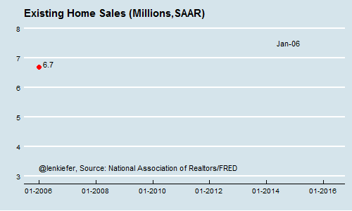
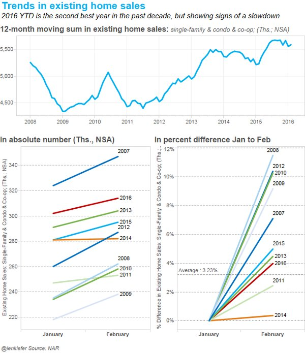
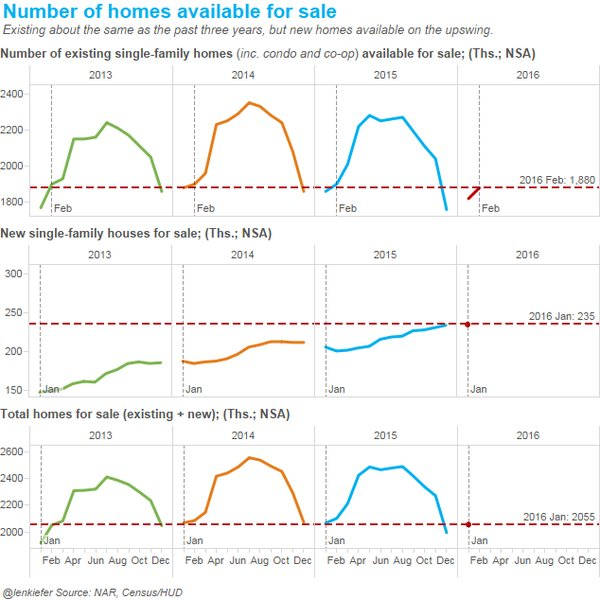
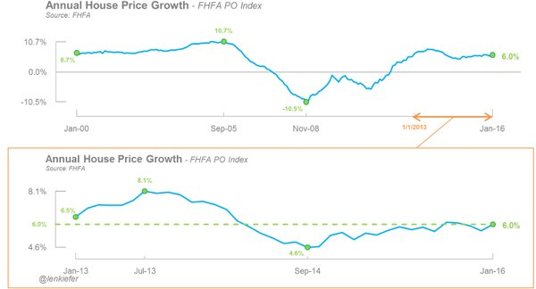
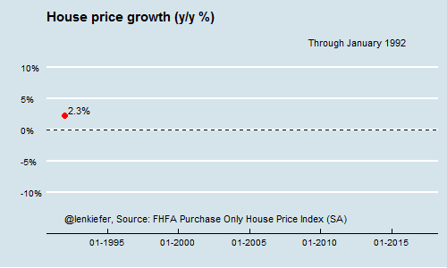

Mid-week chart update
With existing home sales, house prices, and new home sales being released, this is one of the busiest weeks of the month for housing data. We’ll catch new home sales tomorrow morning, but let’s catch our breath and recap what we’ve learned so far this week.
Existing home sales disappoint
The National Association of Realtors (NAR) reported on existing home sales (EHS) on Monday. Existing home sales for February surprised most by dropping 7.1 percent month-over-month at a seasonally-adjusted annual rate.

The annotated gif above shows the history of the NAR EHS since 2006. EHS dropped in November of 2015, but most chalked that up to delays due to TRID implementation. Sure enough, the numbers bounced back in December and January and it looked like we were back on the upswing. What is going on?
Seasonal adjustment factors for housing data have been squirrelly (that’s technical economic jargon) due to the extreme volatility in housing data in recent years. To avoid concerns about seasonal factors and having to do something hard I’ve taken to looking at the non-seasonally adjusted (NSA) data for home sales. In terms of the absolute number of sales, this February is the second highest EHS February number we’ve had in the past decade.
Typically January and December are the seasonal lows for EHS, so despite the fact that February has fewer days we usually get an acceleration in home sales from January to February. We did get a slight increase in the NSA EHS numbers, from 302,000 in January to 314,000 in February, but the percentage increase from January to February was relatively weak compared to the past decade.

Tight inventories to blame?
Everyone is blaming the slowdown in EHS to a lack of inventory. There’s no doubt that inventory levels are low relative to sales, but they are at about the same level as last year. It’s really hard to tell anything from the January and February numbers because listing activity really ramps up starting in March. We’ll have to see how the March numbers look before we can come to any firm conclusion about the trajectory of home sales this year.

House prices rising 6% year-over-year
On Tuesday the FHFA released their house price index and it showed an annual rate of change of 6 percent. House prices have been accelerating since September of 2014, which just so happens to coincide with when mortgage rates started dropping.

The rate of change in the FHFA House Price Index has been robust. The GIF below shows the history of the annual appreciation rate in the FHFA index since 1992. Tight inventories and solid job gains are key drivers of house price gains.

Up next
We’ll stay busy tracking housing data as new home sales come out tomorrow morning.
{% include JB/setup %}